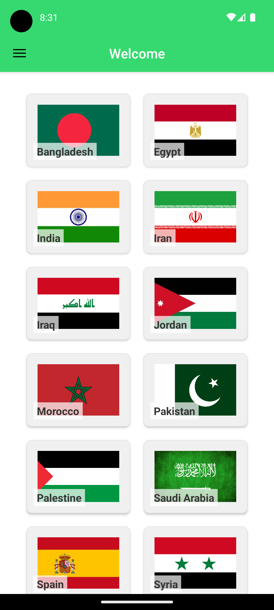
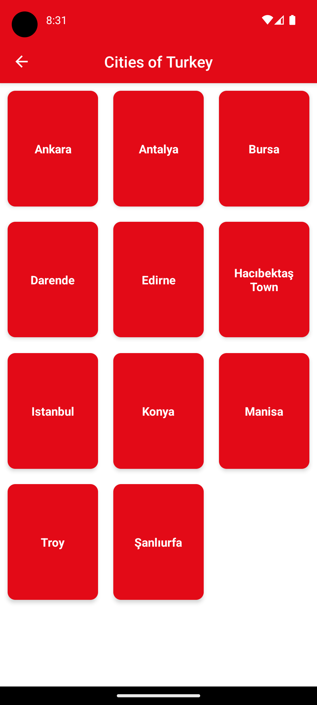
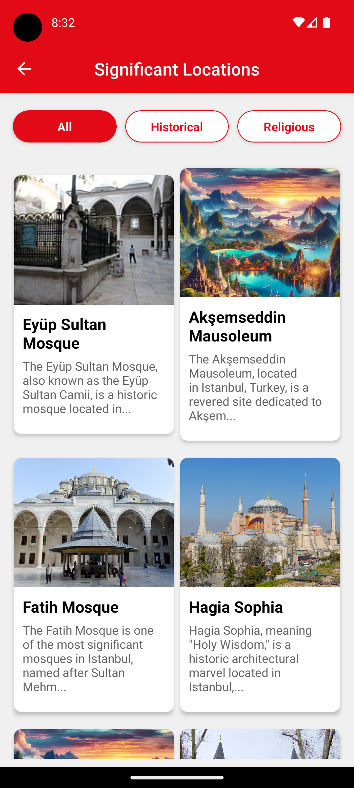
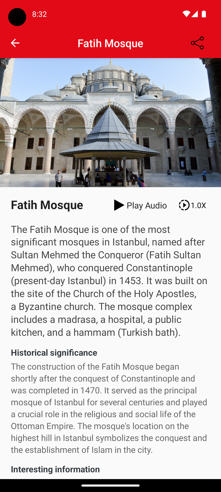

Features
- Countries and Cities at Your Fingertips
- Discover Significant Locations
- Share the Journey
- Text to Speech Functionality
- Navigation Made Easy
Screenshots




Support Us
If you love our app, consider buying us a coffee!
Buy Us A Coffee
Future Plans
-
Personalized Itineraries: Customized travel plans that cater to your
preferences, time constraints, and interests, focusing on Islamic
heritage sites.
-
Halal Dining Guide: A comprehensive guide to halal restaurants and
eateries near your location, including user reviews and ratings.
-
Prayer Times & Qibla Locator: Real-time updates for prayer times and a
digital compass for qibla direction based on your exact location.
-
Local Language Phrasebook: Handy phrases and audio pronunciations in
local languages to help you communicate better during your travels.
-
Offline Access: Downloadable content so you can access maps, guides,
and articles even without an internet connection.
Our dedication to enriching your travel experience is unwavering, and we
can't wait to share these exciting new features with you. Stay tuned for
updates!